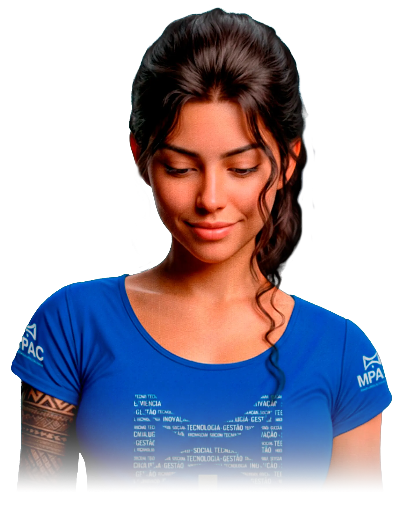

Central de
Ferramentas
Inteligentes
do MPAC
O tecnolog.IA reúne as ferramentas de IA do MPAC, impulsionado pela Anton.IA, o cérebro que conecta recursos e acelera a inovação estratégica.

2
Ferramentas
800+
Transcrições Realizadas
150+
Dias de Trabalho Economizados
100+
Resumos Gerados
24/7
Disponibilidade
Novidades do Hub
Descubra as últimas ferramentas adicionadas ao ecossistema tecnolog.IA, projetadas para acelerar o fluxo de trabalho jurídico.

Desbloqueia Texto
Extração inteligente de texto de PDFs bloqueados e imagens digitalizadas usando OCR avançado.
Acessar FerramentaTranscreveAI
Transcrição automática de audiências com identificação de interlocutores.
Treinamento em Power BI básico
Conectores diretos para visualização de dados processados em dashboards.
Aprenda a usar o TranscreveAI
Análise de tendências em processos para suporte à tomada de decisão.
API Gateway
Documentação para integração de sistemas externos via REST.
Precisa de ajuda ou tem uma sugestão?
Nossa equipe está disponível para auxiliar na utilização das ferramentas e receber feedback para melhorias.
Endereço
Ministério Público do Acre, Rio Branco - AC
seringallab@mpac.mp.br
Telefone
(68) 3212-2000